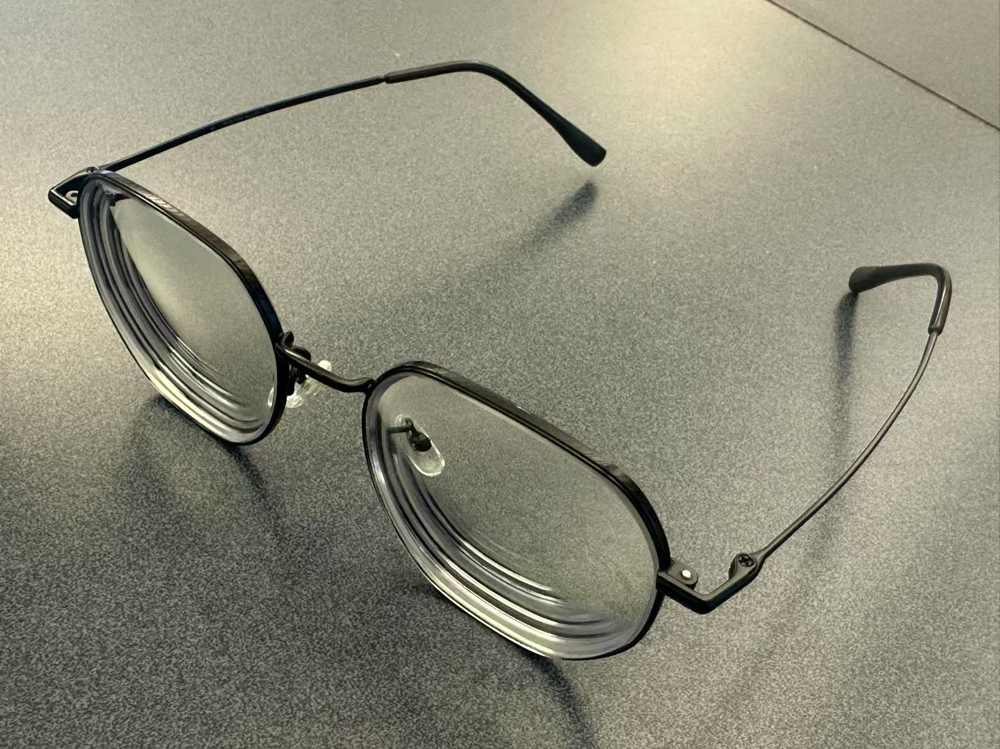
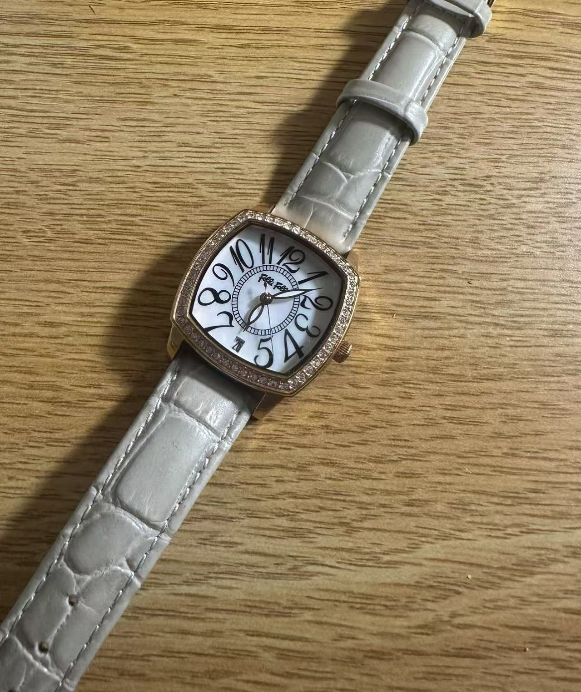
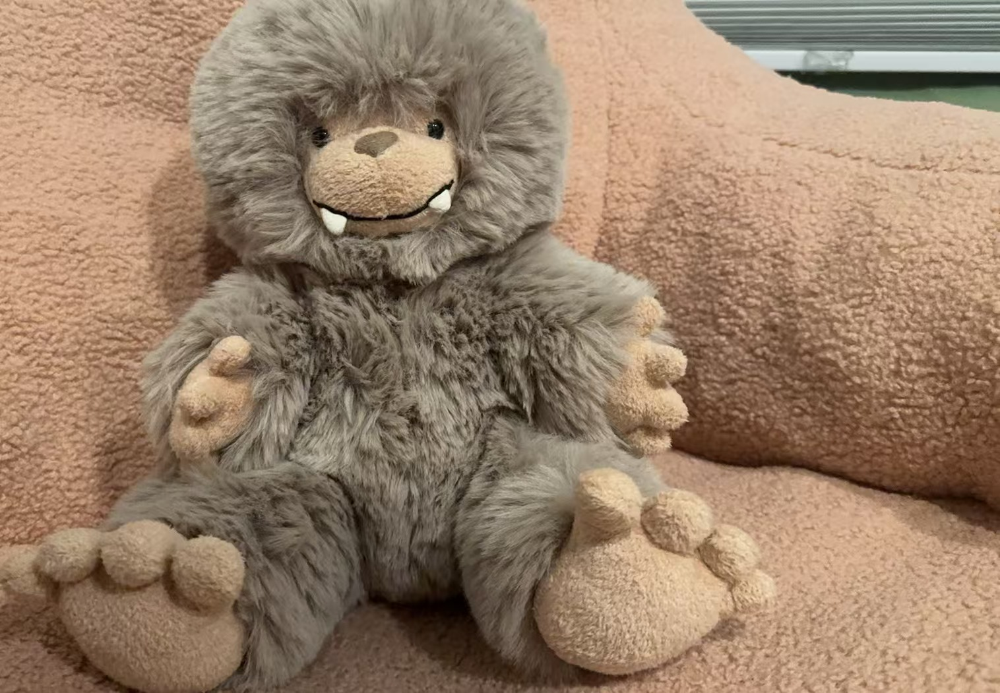

| What does the object look like | Describe the object | How is it meaningful to you |
|---|---|---|
|  | Form: A pair of eyeglasses with a round frame. Material: Made of titanium for comfort. Function: Myopia glasses are designed to help myopic people correct their vision, improve clarity. Use Case: I wear them every day for study and using the computer to prevent blurred vision. |
I have been wearing glasses when I was very young, and they have become an essential part of my life. Glasses are very important to me, I can't see the world clearly without them. |
|  | Form: A square watch with leather strap and metal case. Material: Stainless steel and glass face with leather strap. Function: Showing the time. Use Case: Wearing it on my wrist reminds me of the current time and I don't miss important things. |
It's meaningful because this was a gift from my parents when I was 18 years old. I really rely on my watch and want to know the current time whether it's an emergency or not. |
|  | Form: A soft toy shaped like a monkey. Material: Made of cotton, plush fabric, filled with soft stuffing. Function: A comfort object, often used for gifts for children, giving them a sense of companionship. Use Case: Put it on the bed and cuddle when I go to sleep. |
This toy has been with me since childhood, providing a sense of comfort. It reminds me of my childhood and has emotional value for me. |
Traditional eyeglasses play an important role in vision correction, but people often have problems finding them, such as forgetting to put them somewhere the day before or losing them. This redesign introduces smart glasses with mobile connectivity, integrating Bluetooth tracking and vision monitoring sensors to enhance functionality. These glasses will allow users to locate them via a mobile phone app, while detecting the clarity of vision and receiving mobile phone alerts when glasses need to be replaced and the prescription raised. By combining convenience with proactive eye care, this design aims to improve usability and accessibility for individuals who rely on eyeglasses daily.
The audience for this redesigned object includes students, professionals, and elderly individuals with myopia. The Bluetooth tracking feature eliminates the frustration of misplacing glasses, while the visual monitoring system detects the user's vision and ensures the glasses are usable. The product promotes convenience, efficiency, and active vision monitoring, allowing users to focus more on their daily activities. Not only do these glasses improve vision, but this integration of visual health monitoring ensures a stress-free experience for users who often forget routine eye exams.
The smart glasses will maintain the aesthetics and comfort of traditional eyewear while making technical improvements. Its frame will be made of lightweight titanium, and small sensors and Bluetooth modules will be embedded in the legs. The lenses will be equipped with adaptive vision sensors capable of detecting subtle changes in vision. This design ensures long-term wearability without being heavier than regular glasses, allowing people to wear them without any discomfort.
These glasses are designed for daily wear at home, school, work, and while traveling. Key usability features include:
• Bluetooth tracking: Users can locate misplaced glasses via a mobile app, triggering a beeping sound or vibration.
• Vision monitoring: Sensors analyze eye fatigue and visual clarity and send a notification if the degree needs to be changed.
• Touch controls: A small swipe or tap feature on the temple enables battery checks and app synchronization.
While these glasses provide significant advantages, they are only beneficial for users who require vision correction.
Additionally, like other smart devices, they will require occasional charging, which could be a minor inconvenience for some users.
To illustrate the foundation of this object, I made a paper prototype of a standard pair of eyeglasses before redesigning it.
• Smart Eyewear Trends: Companies such as Google, Meta, and Bose are investing in smart glasses, integrating AR, Bluetooth, and other technologies into eyewear.
• Material Science in Eyewear: Titanium and lightweight plastics are widely used in modern eyewear due to their durability, flexibility, and comfort. These materials allow for the integration of small electronic components without adding excessive weight.
• Vision Health Study: Many users do not realize changes in vision until their eyes feel tired or uncomfortable. Studies have shown that early detection of vision changes can improve long-term eye health and prevent deterioration of vision.
By integrating tracking and vision monitoring, the smart glasses with mobile connectivity enhance accessibility, usability, and proactive eye care.
| Object Attribute | Description |
|---|---|
| Audience | People with myopia, especially those who often misplace their glasses. |
| Form | Standard eyeglasses frame with integrated Bluetooth tracking and vision sensors. |
| Material | Titanium frame with a small embedded tracking device and sensors. |
| Appeal | Enhanced usability and convenience. |
| Purpose | Helps users find their glasses via mobile, monitors vision changes. |
| Message | Never lose your glasses again, and ensure your vision stays accurate. |
| Location | At home, work, school, and during travel. |
| Usability | Connected to a mobile via Bluetooth, users can locate the glasses and check vision. |
| Technique | Bluetooth module, Embedded sensors, Touch-sensitive controls. |